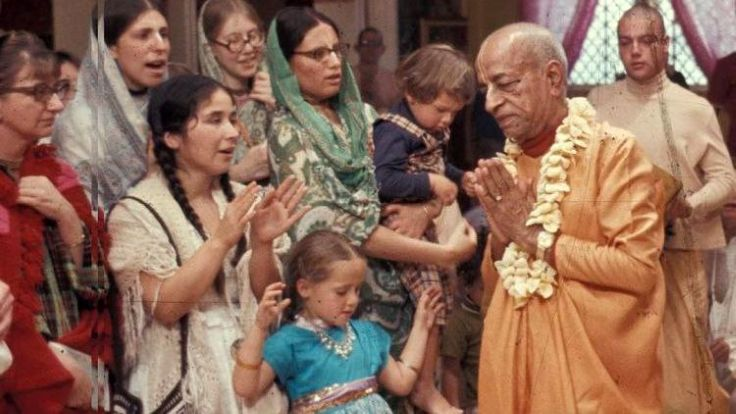

I know that you poor girl have been frustrated by the so called society.

"I know that you poor girl have been frustrated by the so called society and you deeply needed the shelter of Krishna Consciousness. Krishna kindly sent you to me and I have tried to give you whatever I had in my possession. Please go on chanting Hare Krishna Hare Krishna as you are doing now and this very chanting will give you all peace and prosperity both in this life and the next. Never expect any good from the so called society, friendship and love. Only Krishna is the genuine friend of all living beings and it is He only who can give us all benediction. The more you advance in Krishna Consciousness chanting Hare Krishna Hare Krishna the more you become spiritually advanced and happy in all respects.
The separation which you are feeling on account of my physical absence is good sign. The more you feel such separation the more you will be situated in Krishna Consciousness. Lord Caitanya felt this separation and His process of approaching Krishna is the feeling of separation."
~ Letter, April 12, 1967
Send this to all Matajis of Iskcon who have Joined, yet to join and will be joining this glorious movement, Srila Prabhupad's message to the daughters in Krsna conciousness.
~ Admin